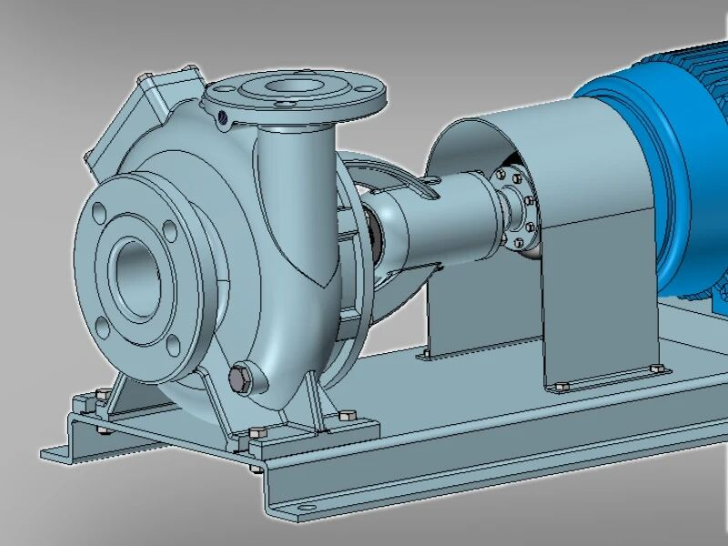

Diseños especiales
Bombas a medida para fluidos y condiciones específicas
Cada industria tiene desafíos únicos. Desarrollamos el equipo según el líquido, el caudal, la presión y el lugar donde se instala, con las características y los materiales que optimizan rendimiento y eficiencia.
Solicitar diseño a medida →